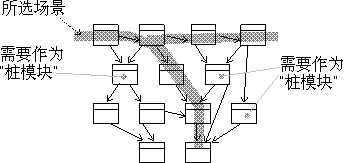

研究已为当前迭代选中的用例和场景。选择一个或几个场景，它们将成为集成的每个增量的目标。可能有必要只选择场景中涉及该子系统的部分。
在项目的集成构建计划中或子系统本地的集成构建计划中捕获集成子系统的计划。
确定参与选中场景的类。在设计用例实现的时序图、通信图或类图中描述每个场景。确定需要实施的类和已经实施的类。也确定不参与场景但需要作为桩模块的类。

从设计用例实现确定类。
确定此工作版本需要的其他实施子系统。确定要使用每个子系统的哪些版本。更新此子系统与其他子系统的恰当版本的导入依赖关系。
如果新系统基线最近已提升，那么集成人员也将必须决定何时更新（重定基线）子系统集成工作空间。该决策基于您在开发周期中所处的位置。如果子系统开发在某个关键区域不稳定，则您可能决定延迟重定基线。
当到了项目后期并接近发行（内部或外部）时，子系统具有一致的导入集合是至关重要的。接着更紧迫的是与系统基线保持同步。
© Copyright IBM Corp. 1987, 2006. All Rights Reserved.